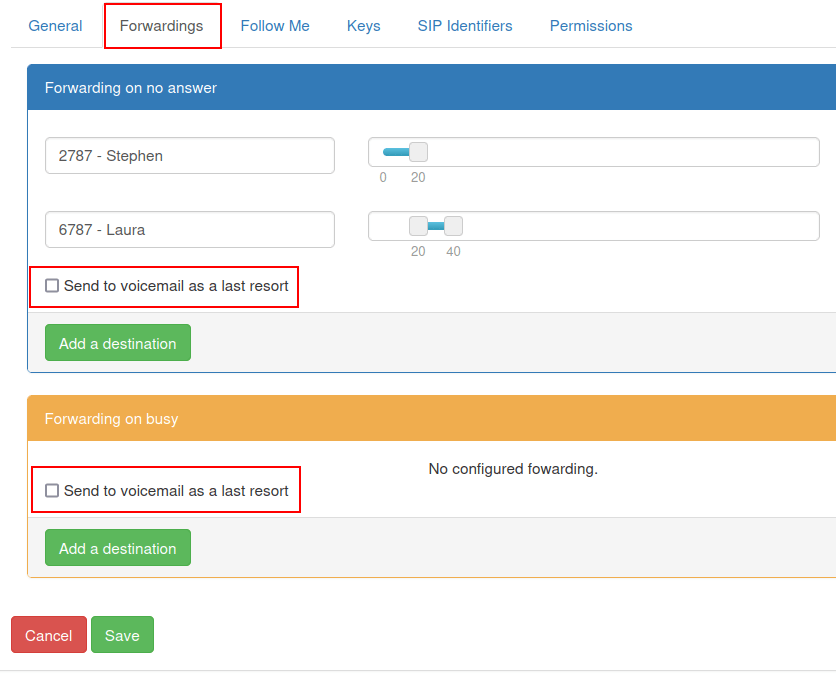
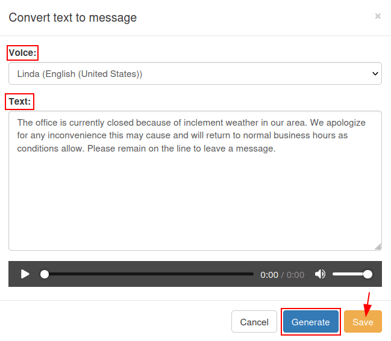

Voicemails and audio messages¶
Managing voicemail is an important part of any business. A company needs to access their messages with ease, and stay on top of any missed calls. Recording audio messages, like thanking a caller for reaching out, or directing them to the right extension, is also a great way to personalize the business interaction, and set the tone with the customer.
This document covers the configuration of both voicemail and audio messages in the Axivox administrative portal.
Set global language¶
To start using voicemails and audio messages with Axivox, the global language should be set in the Axivox admin portal settings. To do that, navigate to manage.axivox.com. After logging into the portal, go to .
From here, set the language to either: Francais, English, Espanol, or Deutsch.
Then, click Save, followed by Apply changes in the upper-right corner of the General Settings page to implement the change into production.
Activate voicemail¶
In order for a user to utilize voicemail in Axivox, the voicemail feature must be turned on in the Axivox administrative portal. To begin using voicemail with a user, navigate to manage.axivox.com. Then, log in with the appropriate administrator credentials.
On the left menu of the Axivox administrative panel, click into Users.
Then, click into the specific user the voicemail should be activated for. Under the section marked, Voicemail, open the drop-down menu, and click on Yes.
Lastly, Save the change, then click Apply changes in the upper-right corner of the screen.
Voicemail¶
The next step is to set up the individual voicemail boxes on the Axivox administrative portal. To access the portal, visit manage.axivox.com and log in. Then, navigate to , located in the menu on the left.
If the voicemail option was activated in the user profile, using this process Activate voicemail, then a voicemail is automatically created on the Voicemails page.
Tip
It should be noted that some of the administrative portal language is in French, as Axivox is a Belgian company. The global language is still set to one of the four options as seen here: Set global language.
Manually create voicemail¶
To manually create a new voicemail box, click Add a voicemail on the Voicemails page. Or, edit an existing voicemail box, by clicking Edit to the far-right of an existing voicemail box on the Voicemails page.
Example
Suppose a sales or support team needs a general voicemail box. The voicemail would need to be created manually, and attached to an incoming number.
The new, manually-created voicemail box should be attached to an incoming number, so it can receive messages. To do so, navigate to , located in the menu on the left. Then, click Edit to the far-right of the specific number the voicemail should be linked to.
In the Destination type for voice call field, click the drop-down menu, and select Voicemail. Then, open the drop-down menu on the next line labeled, Voicemail, and select the manually-created voicemail box.
Important
If an incoming number is capable of receiving SMS/text messages, an additional field, Destination email address for Incoming SMS, is present.
To determine whether an incoming number is capable of receiving SMS/text messages, click Incoming numbers from the menu on the left, then check the SMS compatible column for the incoming number.
Then, if applicable, in the field labeled, Destination email address for Incoming SMS, enter an email to which incoming text messages sent to the incoming number can be received. Some incoming numbers (US +1) in Axivox are capable of receiving text messages from individuals and automated numbers.
Should this field be left empty, the default destination address is used, instead (as previously set in the beginning of the process for manually creating a voicemail).
Once all desired configurations are complete, click Save, then click Apply changes in the upper-right corner of the screen to implement the change into production.
Notifications¶
Now, whenever a voicemail is received on any of the automatically pre-configured or manually-linked voicemail boxes, an email is sent to the user’s email address, as listed in the Voicemails page, or in the user’s Axivox profile.
This information can be accessed by navigating to in the left menu, and clicking Edit next to the specific user in question.
Forwarding to voicemail¶
In Axivox, there are also numerous forwarding settings for a user. To access these forwarding settings, go to manage.axivox.com and log in.
Next, navigate to , located in the menu on the left.
From there, click into the specific user the forwarding should be added to. Then, open the Forwardings tab.
If the user is busy on another call, or away from the phone, there is an option present in this tab to Send to voicemail as a last resort, located in the Forwarding on no answer and Forwarding on busy fields.
If the Send to voicemail as a last resort box is ticked, when the forwarding actions stated in each section are not successful, the caller is routed to the voicemail set on the particular user.
See also
For more information on forwarding and transfers, visit Forwardings tab.
When all the desired configurations are complete, click Save, then click Apply changes in the upper-right corner of the screen to implement the change.
Audio messages¶
It is possible to add audio messages before a customer’s call is even taken, to inform them about the waiting time for deliveries, the availability of a product, or any other important promotional messages.
To record an audio message in Axivox, navigate to manage.axivox.com and log in.
Next, click on Audio messages in the menu on the left. From the Audio messages page, click Add a message.
Type in a Name, and click Save.
Upon clicking Save, the browser redirects back to the main Audio messages page, where the newly-created message can be found on the list.
There are two different ways to make the audio message. The user could either record the message over the phone, or type the message (in text), and select a computer-generated speaker to read the message.
Record audio message¶
To record an audio message over the phone, click the orange button labeled, Record/Listen, located to the right of the desired message on the list to record, on the Audio messages page.
When clicked, a Record / listen to a message pop-up window appears. From here, the message is then recorded, via one of the extensions that is associated with the user. Under Extension to use for message management field, click the drop-down menu, and select the extension where Axivox should call to record the message.
Then, click OK to begin the call.
Note
The user must be active in the production database with VoIP configured. To configure VoIP for a user, see this documentation: VoIP services in Odoo with Axivox.
Upon connecting to the Axivox audio recorder management line, a recorded French-speaking operator provides the following options:
Press
1to record a message.Press
2to listen to the current message.
Press either 1 or 2, depending on whether or not there is already a message present in the
system for this particular audio message that requires a review, before recording a new one.
Record the new audio message after pressing 1, then press # to end the recording.
The French-speaking operator returns to the line presenting the first set of questions again:
Press
1to record a message.Press
2to listen to the current message.
Press # to end the call.
Write audio message¶
To type the message, and select a computerized speaker to say the text, navigate to the in the menu on the left.
From the Audio messages page, select the blue button labeled, Text message, next to the corresponding audio message Name that the message should be attached to.
Doing so reveals a Convert text to message pop-up window.
From the Convert to text message pop-up window, click the drop-down menu next to the field labeled, Voice, and select an option for the Text to be read in.
After the Voice selection has been made, and the message has been written in the Text field, click Generate to process the audio file.
The text is read in the same language it is written in the Text field. Should the language differ in the Voice field, then an accent is used by the computerized speaker.
Finally, when these steps are complete, click Save to save the audio message.
To implement the changes, click Apply changes in the upper-right corner of the screen.
Tip
To set a greeting or audio message in a dial plan element double-click on the element. This could be a Play a file element, or a Menu element, in which the caller should encounter an urgent message, or a dial-by-number directory.
For more information on dial plans see this documentation: Dial plan basics or Advanced dial plans.
Music on-hold¶
Axivox has the option to add custom hold music to the call whenever a caller is waiting for their call to be answered. To add hold music to the Axivox administrative portal, navigate to the manage.axivox.com, and log in.
Then, click on Music on hold from the menu on the left, and a Change the music on hold pop-up window appears.
On the Change the music on hold pop-up window, click the Choose File button to select an MP3 (MPEG Audio Layer 3) or WAV (Waveform Audio File Format ) file to be uploaded.
Note
Only MP3 or WAV files can be uploaded to the Axivox administrative portal.
Once the file is selected, the Progression bar shows an upload status. When this activity completes, the window can be closed, by clicking Close.
When the desired changes are complete, click Apply changes in the upper-right corner of the screen.